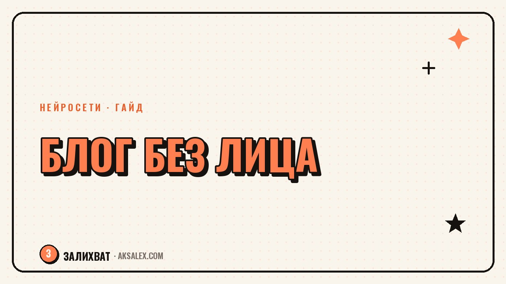

How to Run a Faceless Blog with AI

Not everyone wants to or can show their face on camera every day. Some people feel shy, others work in a niche where staying anonymous makes sense, and some simply aren't ready to deal with filming every single time. The good news: a faceless blog is a completely viable option now, and you can still get reach - as long as you pick the right format and don't try to copy someone else's style one-to-one.
Why the faceless format actually works
Audiences don't watch a video for the blogger's face - they watch for value, emotion, or a good story. Podcasts and video reviews without a host on screen have existed for decades and rack up millions of listens. The difference is that this format used to require a studio and an editor, while now you can put together voiceover and graphics almost entirely on your own.
The main risk is that a faceless format slides into generic content more easily if you don't add a recognizable style - a voice, a delivery, a visual signature. Without that, your videos get lost among hundreds of similar ones.
Formats that work without filming yourself
- Voiceover over B-roll - shots of a product, a screen, nature, or archival footage
- Screencast with commentary - an app review, a case breakdown, a software tutorial
- An AI avatar narrating the text, if you actually need someone on screen
- Animated infographics with voice - works well for educational content
- Text slides with music and subtitles - the lowest-resource option to start with
The AI avatar is the most controversial option. It works for neutral educational content, but it conveys genuine emotion and humor poorly, so for a personal blog, voiceover usually works better.
Comparing formats by effort and results
| Format | Setup difficulty | How the audience perceives it |
|---|---|---|
| Voice + B-roll | Medium | Feels natural, like a podcast with visuals |
| Screencast | Low | Clear and useful for educational content |
| AI avatar | Medium | Met with skepticism if the topic is personal |
| Text slides | Low | Scrolled past quickly if there's no hook in the first few seconds |
How to build your voice and delivery without showing your face
What to do first
- Record your voice in a quiet room - good sound matters more than picture in this format
- Write the script in conversational language, as if explaining something to a friend rather than reading a report
- Keep one visual style - font, colors, type of B-roll - consistent from video to video
- Add pauses and intonation instead of reading the text in a flat voice from start to finish
Without a face on screen, your voice and script structure become your entire charisma - you can't cut corners there.
Where AI actually helps here
AI handles the technical tasks: it removes noise from voice recordings, generates subtitles automatically, helps turn notes into a script, and creates an AI avatar if the format calls for one. It doesn't replace the idea behind the video or the structure of delivery - that's still your job.
It's worth testing tools on short videos before building your entire content plan around them. That way you can see whether a tool actually delivers the sound and picture quality you need without endless reworks.
Common mistakes with the faceless format
The first mistake is a monotone voice with no intonation, which gets a video switched off within the first few seconds. The second is visuals that have no connection to the meaning of the text, which scatters attention. The third is trying to use an AI avatar instead of your own voice in places where the audience expects personal connection - for example, in a blog about personal experience.
The faceless format isn't worse than the classic one - it just requires shifting your effort from the picture to the voice and the structure of the text.
Frequently Asked Questions
Can you grow a blog without ever showing your face?
Yes, review, educational and podcast formats regularly gain reach without a host on screen. Sound, structure and consistency are what matter.
Should you use an AI avatar instead of yourself?
For neutral educational content - yes. For a personal blog with stories, your own voiceover works better, since an avatar conveys emotion poorly.
What matters more for a faceless format - sound or picture?
Sound. Viewers will forgive a mediocre picture, but they'll switch off noisy or monotone narration within the first few seconds.
How do you make a faceless format recognizable?
Keep a consistent visual style and delivery from video to video - that replaces recognition by face.
Do you need a script if you're filming a screencast?
Yes, at least a short point-by-point outline. Without one, the explanation drifts and the viewer loses the thread.
not by hand